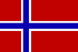

|
Länderinformationen Norwegen
1. Das Wichtigste auf einen Blick2. Sehens- und Hörenswertes
3. Politik & Gesellschaft
4. Schmeckenswertes
5. Medien
6. Reisetipps
1. Wissenswertes
|  | Hier
haben wir die wichtigsten Zahlen und Fakten zu Norwegen
und der norwegischen Sprache zusammengetragen. |
Wir freuen uns, dass Sie sich für einen Norwegischkurs von Sprachenlernen24 entschieden haben. Um Ihnen die Reisevorbereitungen zu erleichtern und Ihnen einen kleinen Vorgeschmack dessen zu geben, was Sie im Königreich Norwegen (Kongeriket Norge) erwarten wird, haben wir für Sie hier Wissenswertes, Wichtiges, Kurioses, Interessantes, Kulinarisches und noch viele Informationen mehr rund um Norwegen, seine Sprache und Menschen zusammengetragen.
Auf die Frage „Snakker du norsk? – Sprichst du Norwegisch?“ werden Ihnen insgesamt knapp fünf Millionen Menschen mit „Ja!! – Ja!“ antworten. Die große Mehrheit der Sprecher des Norwegischen (norsk) lebt in Norwegen. Aber weit über eine halbe Million Menschen sprechen Norwegisch als Muttersprache beispielsweise in Schweden, in den USA, in Kanada und in Ecuador.
 Die
norwegische Sprache
Die
norwegische Sprache
Norwegisch zählt man zur Sprachfamilie der indogermanischen Sprachen. Jetzt werden Sie (und das zurecht) zwei Fragen stellen: 1. Was ist eine Sprachfamilie? und 2. Was kennzeichnet die Familie der indogermanischen Sprachen?
Nun, um die erste Frage zu beantworten: Unter Sprachfamilien versteht man Gruppen von Sprachen, die miteinander (mit großer bzw. größter Wahrscheinlichkeit) verwandt sind. Die Untersuchung der Sprachfamilien begann man Ende des 18. Jahrhunderts. Zu dieser Zeit beschäftigte die Sprachforscher die Frage, ob es nicht eine gemeinsame Ur-Sprache der Menschheit gegeben habe. Und so hat man begonnen, Sprachen zu untersuchen und auf gemeinsame historische Ur-Sprachen zurückzuführen. Als Beispiel dürfte Ihnen die Gruppe der romanischen Sprachen bekannt sein. Als gemeinsame „Elternsprache“ dieser Gruppe hat man Latein identifiziert. Aus dieser Sprache entwickelten sich die „Tochtersprachen“ Französisch, Spanisch, Italienisch, Portugiesisch und Rumänisch - um nur die größten unter ihnen zu nennen.
Die Familie der indogermanischen Sprachen ist weit verzweigt und in viele Unterzweige aufgeteilt. Eine dieser Aufspaltungen ist der Zweig der nordgermanischen Sprachen. Andere indoeuropäische Sprachzweige sind unter anderem der westgermanische (zum Beispiel Deutsch und Englisch), der slawische (zum Beispiel Russisch und Polnisch) und der baltische Sprachzweig (zum Beispiel Lettisch und norwegisch).
Nun aber wieder zurück zu den nordgermanischen bzw. skandinavischen Sprachen: Zu dieser Familie rechnet man das Dänische, das Färöische, das Isländische, das Norwegische und das Schwedische. Es ist wissenschaftlich erwiesen, dass der Erwerb einer neuen Sprache leichter fällt, wenn die neue Sprache innerhalb der gleichen Sprachfamilie liegt. Also, wenn Sie jetzt bald sattelfest im Norwegischen sind, warum lernen Sie nicht gleich weiter mit Schwedisch oder Isländisch? Mit dem Isländischen und Färöischen ist das Norwegische besonders eng verwandt. Die Ursprünge dieser Verwandtschaft gehen zurück auf das siebte Jahrhundert n. Chr.. Zu dieser Zeit brechen in Norwegen die Wikinger auf, um neues Terrain zu besiedeln und ihre Handelswege auszubauen. Auf ihren Fahrten gelangen sie nach England, nach Irland, nach Grönland und auch nach Island. In Island finden sie eine unbesiedelte Insel, die sie kolonialisieren. Das Isländische hat seine Wurzeln also in der Sprache der norwegischen Wikinger.
Aber auch vom Deutschen ausgehend, werden Sie wahrscheinlich Einiges verstehen können, wenn Sie mit der norwegischen Sprache konfrontiert werden. Das Norwegische hat viele Gemeinsamkeiten mit dem Deutschen. Das Alphabet und die Schreibweise ist sehr ähnlich, nur die Aussprache unterscheidet sich – teilweise stark – von der deutschen.
Im Norwegischen wird das lateinische Alphabet verwendet – somit werden Sie beim Erlernen der norwegischen Sprache etwas entlastet. Sogar die Reihenfolge der Buchstaben im Alphabet ist die gleiche wie im Deutschen, allerdings mit zusätzlichen drei Sonderzeichen am Ende: Æ/æ, Ø/ø und Å/å.
 Norwegen:
ein Land - zwei Amtssprachen
Norwegen:
ein Land - zwei Amtssprachen
Wenn Sie sich erinnern: gerade haben Sie erfahren, dass circa fünf Millionen Menschen Norwegisch sprechen. Das ist so eigentlich nicht richtig, denn in Norwegen sprechen die Menschen nicht ein „Norwegisch“, sondern viele verschiedene Dialekte. Diese Vielfalt an heute noch lebendigen und gepflegten Dialekten ist in der geographischen Beschaffenheit Norwegens begründet. Unzählige Fjorde, hohe Berge und unwegsames Gelände trennen seit jeher die einzelnen Siedlungen der Menschen in Norwegen voneinander. So ist es kein Wunder, das es unmöglich war und immer noch ist, eine einheitliche und standardisierte Sprache im ganzen Land zu verbreiten.
Die vielen Dialekte in Norwegen lassen sich in zwei Gruppen gliedern: Es gibt eine Gruppe westnorwegischer und eine Gruppe ostnorwegischer Dialekte. Aus der Gruppe der westnorwegischen Dialekte formte der Dichter und Sprachwissenschaftler Ivar Aarsen in der Mitte des 19. Jahrhunderts eine Kunstsprache, die er landsmål (dt. Nationalsprache) nannte. Aarsen verfolgte mit seiner Neuschöpfung die Absicht, eine Sprache zu schaffen, die den ursprünglichen Charakter der norwegischen Dialekte in sich sammelte und bewahrte. Gleichzeitig sollten alle Dialektsprecher der westnorwegischen Varianten eine gemeinsame Schriftsprache bekommen. Im Zuge einer demokratischen Reformbewegung versuchte man diese Sprache im ganzen Land zu verbreiten. 1885 wurde landsmål als offizielle Sprache anerkannt. 1929 wurde landsmål umbenannt in nynorsk (dt. Neunorwegisch). Noch heute spricht und schreibt etwa ein Viertel der norwegischen Bevölkerung Nynorsk.
Neben Nynorsk ist in Norwegen noch eine zweite Sprache als Amtssprache eingetragen: bokmål (dt. Buchsprache). Drei Viertel der Menschen in Norwegen pflegen diese Variante ihrer Muttersprache. Auch in den Medien und in allen Druckerzeugnissen wird Bokmål verwendet. Bokmål ist entstanden in der Zeit der dänischen Herrschaft über Norwegen. Ab 1500 ist Dänisch die alleinige Amtssprache in Norwegen. Die verschiedenen Dialekte werden aber weiterhin gepflegt und so kommt es zu einer Mischform aus Dänisch und Norwegisch, die nach der norwegischen Unabhängigkeit von Dänemark (1814) unter der Bezeichnung riksmål (dt. Reichssprache) als Schriftsprache im ganzen Land eingeführt wird. 1929 wird riksmål umbenannt in bokmål.
Heute existieren beide Sprachen gleichberechtigt nebeneinander in Norwegen: beide Sprachen sind offizielle Amtssprachen und die Kinder werden in den Schulen in beiden Sprachen unterrichtet.
Nun aber genug von der Sprache und los geht's ins Königreich Norwegen. Im folgenden Abschnitt finden Sie interessante Fakten zu Norwegen sowie Informationen zu landestypischen Begebenheiten.
 Einwohner
Einwohner
In Norwegen leben etwa 4,6 Millionen Einwohner – und somit hat Norwegen etwa ein Drittel der Einwohnerzahl von Bayern – bei einer mehr als fünf Mal so großen Fläche. An Minderheiten lassen sich in Norwegen vor allem Finnen und Samenfinden. Die finnischen und samischen Minderheiten leben vor allem im Norden des Landes. Dort pflegen sie auch ihre eigene Sprache. In den Kommunen Norwegens, in denen sie die Mehrheit der Bewohner stellen, sind Finnisch bzw. Samisch auch Amtssprachen - neben bokmål und nynorsk.
Die meisten Norweger sprechen neben Norwegisch noch Fremdsprachen wie Englisch, Deutsch oder Französisch.
Das Durchschnittsalter der norwegischen Bevölkerung liegt bei knapp 39 Jahren und ist damit etwas niedriger als in Österreich, Deutschland oder der Schweiz. Die durchschnittliche Lebenserwartung in Norwegen liegt bei knapp 77 Jahren (Männer) und rund 82 Jahren (Frauen).
 Fläche
Fläche
Das Staatsgebiet Norwegens umfasst eine Fläche von knapp 390.000 km² und ist damit flächenmäßig etwa so groß wie Deutschland und Belgien zusammen. Allerdings sollte man auch die Staatsgebiete hinzurechnen, die außerhalb der eigentlichen Staatsgrenzen liegen. Das wären einige Inseln im Nordatlantik, im Nord- und im Südpolarmeer sowie ein Gebiet in der Antarktis.
Eine gemeinsame Landgrenze (ungefähr 2500 Kilometer lang) hat Norwegen mit Schweden, Finnland und Russland. Im Westen und im Süden begrenzt Norwegen die von vielen Fjorden eingeschnittene Atlantikküste.
Interessant zu wissen ist vielleicht auch, dass die Bevölkerungsdichte bei etwa 12 Einwohnern pro km² liegt, was eine deutlich dünnere Besiedlung bedeutet als etwa in Deutschland: Hier leben 230 Menschen auf einem Quadratkilometer.
 Währung
Währung
In Norwegen wird mit der norwegischen Krone (krona, Abk.: NOK) gezahlt. Diese ist wiederum unterteilt in 100 Öre (øre). Einen aktuellen Wechselkurs von Krone zu Euro können wir Ihnen an dieser Stelle freilich nicht bieten, dieser lässt sich jedoch im Internet mit wenig Aufwand bequem finden (geben Sie einfach bei einer Suchmaschine den Begriff „Währungsrechner“ ein). Oder Sie fragen bei Ihrer Bank nach dem aktuellen Kurs. Dort gibt man Ihnen gerne Auskunft.
 Ökonomische
Situation
Ökonomische
Situation
Im direkten Vergleich mit Deutschland, Österreich oder der Schweiz verfügt man in Norwegen über einen recht ähnlichen Lebensstandard. Der Wohlfahrtsstaat Norwegen existiert immer noch, ist aber nicht mehr ganz so, wie er früher einmal gewesen ist. Wenngleich die Löhne in Norwegen vergleichsweise hoch liegen, sind die steuerlichen Abgaben ebenfalls beachtlich.
Norwegen gehört, zusammen mit anderen skandinavischen Ländern, zu den teuersten Ländern der Welt. Oslo hat sogar den Status von Tokio als die teuerste Stadt der Welt überholt!
Hauptexportgüter des Landes sind moderne Industrieprodukte (vor allem Maschinen und Metallprodukte, Kraftfahrzeuge, Schiffe), Öl, Holzprodukte, Erze, Metalle sowie Lebensmittel. Wer hat nicht schon mal den köstlichen norwegischen Lachs gekauft?
 Zeitzone
Zeitzone
Norwegen liegt in der selben Zeitzone wie Österreich, Deutschland und die Schweiz. Wenn Sie mittags um zwölf Uhr essen gehen, tun es Ihre norwegischen Kollegen eventuell auch: Sie können ihnen Velbekomme! (dt. Guten Appetit!) wünschen.
In Norwegen wird übrigens zur Sommerzeit die Uhr ebenfalls um eine Stunde vorgestellt.
Nach diesem Kapitel über Sprache und Land, möchten wir Sie im nächsten Abschnitt einladen zu einer kleinen Reise durch Norwegen. Dort haben wir einige ausgesuchte Reiseziele versammelt und stellen Ihnen Sehens- und Hörenswertes vor.